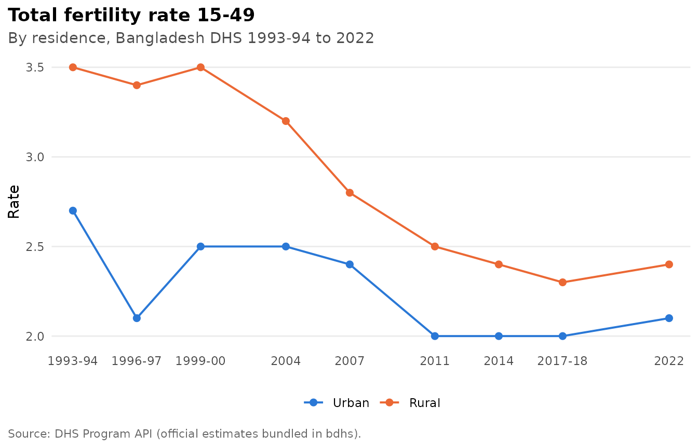
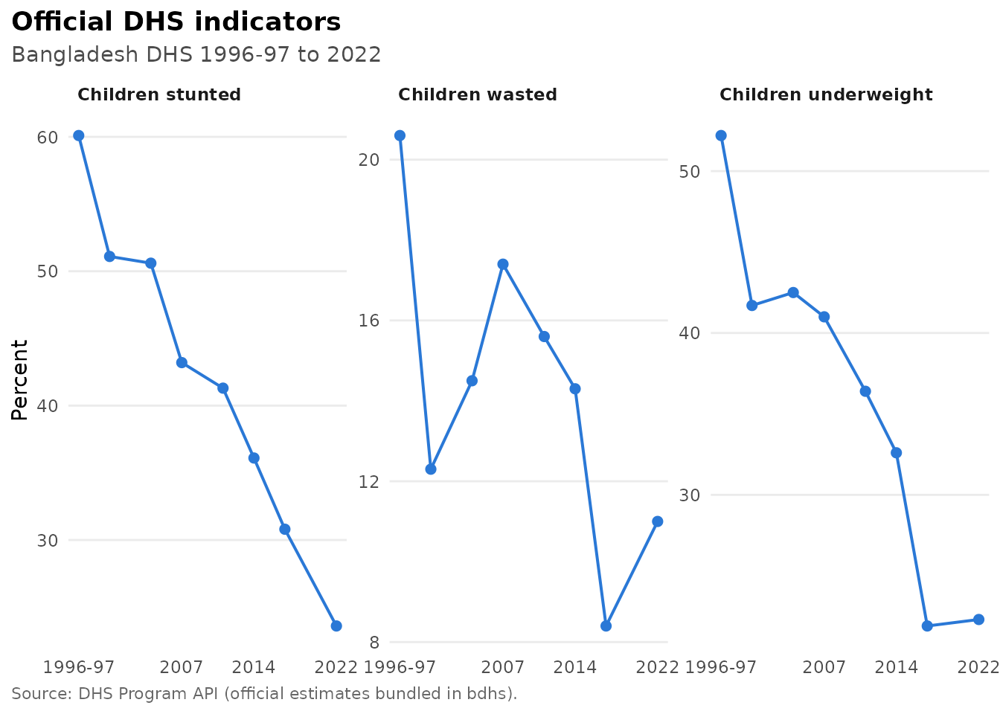
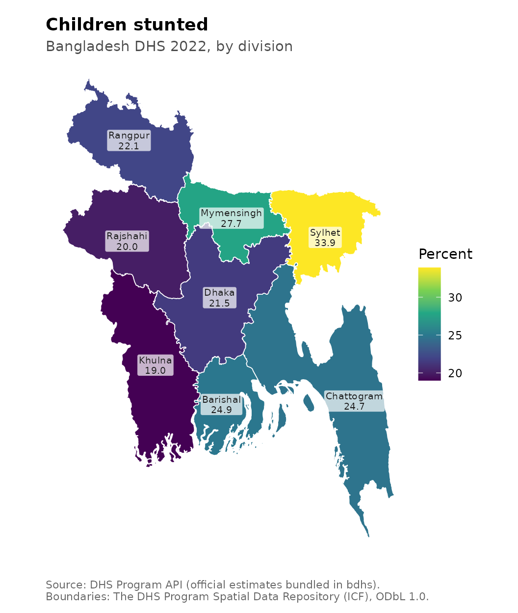

Everything in this article works straight after installing bdhs. You don’t need a DHS account or any downloads, because the package ships every official estimate the DHS Program publishes for Bangladesh. These are the numbers in the BDHS final reports and in STATcompiler.
What is bundled
bdhs_indicators holds about 310,000 official values.
That covers every indicator, every survey round from 1993-94 to 2022,
and every published breakdown: national, division and background
characteristics such as residence, education and wealth.
bdhs_indicator_catalog describes each indicator
(definition, denominator, topic and the rounds it covers).
nrow(bdhs_indicators)
#> [1] 310528
dplyr::count(bdhs_indicator_catalog, topic, sort = TRUE)
#> # A tibble: 21 × 2
#> topic n
#> <chr> <int>
#> 1 Family Planning 366
#> 2 Child Health 271
#> 3 Child Nutrition 216
#> 4 Household Characteristics 195
#> 5 Reproductive Health 189
#> 6 Water and Sanitation 160
#> 7 Fertility 151
#> 8 Education 141
#> 9 Infant and Child Mortality 137
#> 10 Women's Empowerment 115
#> # ℹ 11 more rowsFinding an indicator
bdhs_search() looks through indicator labels and
definitions, survey variables and harmonized variables at once. Restrict
it to indicators with where = "indicators":
bdhs_search("stunt", where = "indicators")
#> # bdhs search for "stunt": 2 matches
#>
#> ── Official DHS indicators (2) ─────────────────────────────────────────────────
#> CN_NUTS_C_HA3 Children severely stunted 1996-97, 1999-00, 2004, 2007, 2011, 2014, 2017-18, 2022
#> CN_NUTS_C_HA2 Children stunted 1996-97, 1999-00, 2004, 2007, 2011, 2014, 2017-18, 2022Pulling official values
bdhs_official() returns tidy rows for one or more
indicators. By default it gives the national headline value for every
round:
bdhs_official("CN_NUTS_C_HA2")[, c("year_label", "indicator", "value", "ci_low", "ci_high")]
#> # A tibble: 8 × 5
#> year_label indicator value ci_low ci_high
#> <chr> <chr> <dbl> <dbl> <dbl>
#> 1 1996-97 Children stunted 60.1 NA NA
#> 2 1999-2000 Children stunted 51.1 NA NA
#> 3 2004 Children stunted 50.6 NA NA
#> 4 2007 Children stunted 43.2 NA NA
#> 5 2011 Children stunted 41.3 NA NA
#> 6 2014 Children stunted 36.1 NA NA
#> 7 2017-18 Children stunted 30.8 NA NA
#> 8 2022 Children stunted 23.6 NA NAAsk for a breakdown to get subgroup values, for example by division in 2022:
stunting_div <- bdhs_official("CN_NUTS_C_HA2", survey = 2022, breakdown = "subnational")
stunting_div[, c("characteristic_label", "value", "denom_unweighted")]
#> # A tibble: 11 × 3
#> characteristic_label value denom_unweighted
#> <chr> <dbl> <dbl>
#> 1 Barishal 24.9 496
#> 2 Chattogram/Sylhet 27 1278
#> 3 Chattogram 24.7 732
#> 4 Sylhet 33.9 546
#> 5 Dhaka before 2015 23.2 1132
#> 6 Dhaka 21.5 607
#> 7 Mymensingh 27.7 525
#> 8 Khulna 19 450
#> 9 Rajshahi/Rangpur 21.1 904
#> 10 Rangpur 22.1 491
#> 11 Rajshahi 20 413Besides the eight current divisions, the DHS Program also publishes the older groupings, such as “Chattogram/Sylhet”, “Dhaka before 2015” (Dhaka plus Mymensingh) and “Rajshahi/Rangpur”. These match the division layout of earlier rounds, so they are the values to use for long-run regional trends.
The survey argument accepts years, year ranges, DHS ids
and file codes, so 2017, "2017-18",
"BD2017DHS" and "7R" all mean the 2017-18
survey.
Trends
bdhs_plot_trend() draws an indicator across all rounds.
Give it a characteristic category to split the trend:
bdhs_plot_trend("FE_FRTR_W_TFR", by = "Residence")
Several indicators can share one chart:
bdhs_plot_trend(c("CN_NUTS_C_HA2", "CN_NUTS_C_WH2", "CN_NUTS_C_WA2"))
Maps
bdhs_boundaries() returns the division boundaries used
by a given survey, as an sf object. They come from the DHS
Program Spatial Data Repository under the Open Database License. The
number of divisions changed over time: 5 in 1993-94, 6 from 1996-97, 7
from 2011 (Rangpur) and 8 from 2017-18 (Mymensingh).
b <- bdhs_boundaries(2022)
b[, c("region_code", "region_name")]
#> Simple feature collection with 8 features and 2 fields
#> Geometry type: MULTIPOLYGON
#> Dimension: XY
#> Bounding box: xmin: 88.03243 ymin: 20.59039 xmax: 92.68078 ymax: 26.63625
#> Geodetic CRS: WGS 84
#> region_code region_name geometry
#> 1 1 Barishal MULTIPOLYGON (((90.33083 21...
#> 2 2 Chattogram MULTIPOLYGON (((91.85583 21...
#> 3 3 Dhaka MULTIPOLYGON (((89.35535 23...
#> 4 4 Khulna MULTIPOLYGON (((89.2995 21....
#> 5 5 Mymensingh MULTIPOLYGON (((89.64786 25...
#> 6 6 Rajshahi MULTIPOLYGON (((88.7203 24....
#> 7 7 Rangpur MULTIPOLYGON (((88.83978 25...
#> 8 8 Sylhet MULTIPOLYGON (((90.96542 25...bdhs_map() draws an official indicator by division:
bdhs_map("CN_NUTS_C_HA2", survey = 2022)
It also maps your own estimates. Any data frame with division codes
(v024, hv024, region_code) or
division names works, including the output of
bdhs_estimate(..., by = "v024").
Notes on comparability
- Division layouts differ between rounds, so division-level trends are
only comparable after back-mapping to a common layout.
bdhs_regionsgives the crosswalk, andbdhs_harmonize()createsdivision_trend6anddivision_trend5for microdata. - Official values are rounded the way the DHS Program publishes them.
Values you compute from microdata with
bdhs_estimate()keep full precision. - Please cite the DHS Program API when you use these values
(
citation("bdhs")).